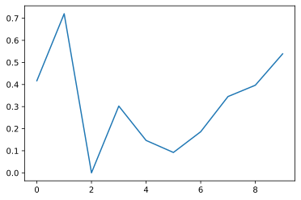
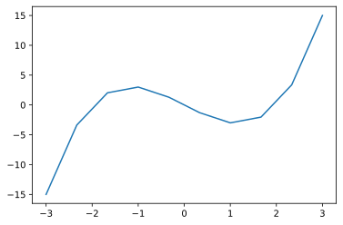
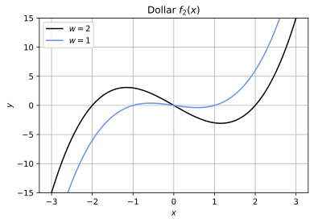
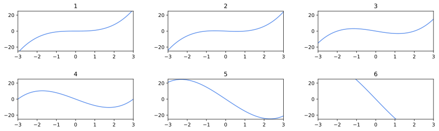
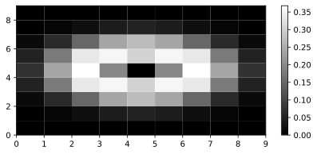
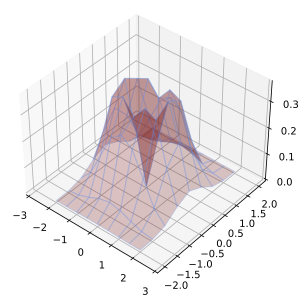
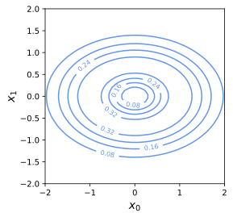

Matplotplib, np.linspace, drawing chart, 색상표, 여러개의 그래프 보기, surface
Matplotlib
1 | import numpy as np |
Matplotlib 설치: pip install matplotlib
# Jupyter Notebook에서 그래프를 표시
[Matplotlib Basic]
https://jfun.tistory.com/63
1 | # version check |
1 | import numpy as np |
1 | # data 작성 |
[0 1 2 3 4 5 6 7 8 9]
[4.17022005e-01 7.20324493e-01 1.14374817e-04 3.02332573e-01
1.46755891e-01 9.23385948e-02 1.86260211e-01 3.45560727e-01
3.96767474e-01 5.38816734e-01]
<function matplotlib.pyplot.show(close=None, block=None)>

1 | import numpy as np |
-3
[-3 0 15]
np.linspace(start, stop, endpoint = True)
1 | x = np.arange(-3, 3.5, 0.5) |
[-3. -2.5 -2. -1.5 -1. -0.5 0. 0.5 1. 1.5 2. 2.5 3. ]
[-3. -2.33333333 -1.66666667 -1. -0.33333333 0.33333333
1. 1.66666667 2.33333333 3. ]
[-3. -2.33 -1.67 -1. -0.33 0.33 1. 1.67 2.33 3. ]
1 | plt.plot(x,f(x)) |
<function matplotlib.pyplot.show(close=None, block=None)>

drawing chart
- plt.plot > color, label
- plt.legend(loc=”upper left”) # 범례 표시
- plt.xlim
- plt.ylim
- plt.title
- plt.xlabel
- plt.ylabel
- plt.grid # 격자 유무
- plt.gray
- plt.pcolor
- plt.colorbar
1 | import numpy as np |
<function matplotlib.pyplot.show(close=None, block=None)>

색상표
import matplotlib
matplotlib.colors.cnames
ex) ‘cornflowerblue’ : ‘#6495ED’ > 64 95 ED > R G B 색상표에서 계산
     64 95 ED (HEX) > 100 149 237 (DEC, RGB)
1 | import matplotlib |
그래프 여러개 보여주기
- subplot
- plt.subplot(n1, n2, n)
- n1 : 전체 그림의 세로 개수
- n2 : 전체 그림의 가로 개수
- n : 현재 그림의 위치(좌상단부터 1,2,3,…)
  : ※ 0이 아니고 1부터 시작
plt.figure
plt.subplots_adjust
plt.subplot
plt.subplots_adjust(wspace, hspace) : wspace 가로 공백, hspace 세로 공백
1 | import numpy as np |

1 | import numpy as np |
[[0. 0. 0. 0. 0. 0. 0. 0. 0. ]
[0. 0.01 0.02 0.04 0.05 0.04 0.02 0.01 0. ]
[0.01 0.06 0.15 0.24 0.27 0.24 0.15 0.06 0.01]
[0.05 0.18 0.33 0.35 0.3 0.35 0.33 0.18 0.05]
[0.07 0.24 0.37 0.19 0. 0.19 0.37 0.24 0.07]
[0.05 0.18 0.33 0.35 0.3 0.35 0.33 0.18 0.05]
[0.01 0.06 0.15 0.24 0.27 0.24 0.15 0.06 0.01]
[0. 0.01 0.02 0.04 0.05 0.04 0.02 0.01 0. ]
[0. 0. 0. 0. 0. 0. 0. 0. 0. ]]
1 | import numpy as np |

Surface
1 | from mpl_toolkits.mplot3d import Axes3D |
<function matplotlib.pyplot.show(close=None, block=None)>

1 | import numpy as np |
<function matplotlib.pyplot.show(close=None, block=None)>

You need to set
install_url to use ShareThis. Please set it in _config.yml.